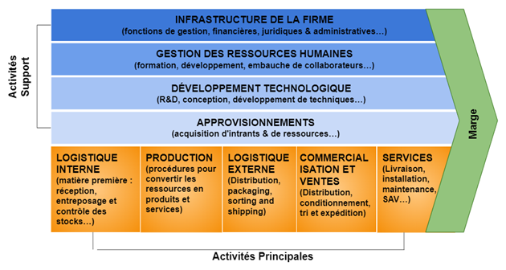

Chaîne de valeur de Porter
Définition : Chaîne de valeur de Porter
La chaîne de valeur décompose l'activité de l'entreprise en étapes et fonctions qui génèrent des coûts et contribuent à la valeur finale de l'offre.
On distingue les fonctions opérationnelles directement créatrices de valeur, et les fonctions supports qui aident celles-ci à mieux réaliser leurs missions.
Exemple :

Le cœur de métier est l’activité principale d’une entreprise. Il regroupe le domaine d’expertise le plus abouti de l’organisation, le plus rentable. Au sein de la chaine de valeur, c’est l’activité la plus importante et la mieux maîtrisée. Les fonctions support d’une entreprise, également appelées back office, concernent l’ensemble des activités de gestion qui ne constituent pas son cœur de métier.
La marge exprimée correspond à la valeur créée et capturée les coûts associés.
La valeur est la somme que les clients sont prêts à payer pour le produit, le service ou prestation.
Méthode : Description de l’exemple
Activités principales | Activités de soutien |
|---|---|
|
|
Complément : Optimisation de la chaîne de valeur
Externalisation | L’entreprise confie durablement une fonction à un prestataire externe Objectifs :
|
|---|---|
Sous-traitance | L’entreprise confie ponctuellement tout ou partie d’une activité Objectifs :
|
Intégration | L’entreprise réalise elle-même ses activités (production, distribution…). Ex. en acquérant un des ses fournisseurs. Objectifs :
|
Complément : Effets recherchés au travers de ces choix organisationnels
Efficacité opérationnelle
Améliore le fonctionnement quotidien
Permet un meilleur pilotage
Optimisation des ressources
Réduction des coûts
Meilleure utilisation des compétences
Possibilité d’automatisation
Conformité et sécurité
Respect des normes (RGPD…)
Réduction des risques
Innovation et amélioration continue
Accès à de nouvelles expertises
Amélioration des प्रक्रesses
Alignement stratégique
Cohérence avec les objectifs globaux
Soutien aux activités principales